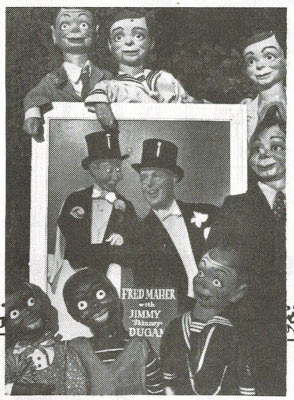

Untitled
12/29/2012
TERRY or JIMMY??
From Steve Engle
In reference to the Terry-Jimmy "Skinney" conversation, here is a pic you probably have which I found on the inside cover of Fred's Catalog No. 1. The poster definitely shows the figure in question as Jimmy "Skinney" Dugan, not Terry.
* * * * *
From Mr. D: Thank you, Steve, for reminding me of one of the places where the name of Fred Maher's first figure can be authenticated as "Jimmy" - not "Terry". I do still have several lithograph printed 1960's of Catalog No. 1 (like new). Mrs. Maher was using that edition of the catalog when we purchased Maher School of Ventriloquism in 1969 and we continued to do so during our early years. $10.00 each PP.
{kind=link}

From Steve Engle
In reference to the Terry-Jimmy "Skinney" conversation, here is a pic you probably have which I found on the inside cover of Fred's Catalog No. 1. The poster definitely shows the figure in question as Jimmy "Skinney" Dugan, not Terry.
* * * * *
From Mr. D: Thank you, Steve, for reminding me of one of the places where the name of Fred Maher's first figure can be authenticated as "Jimmy" - not "Terry". I do still have several lithograph printed 1960's of Catalog No. 1 (like new). Mrs. Maher was using that edition of the catalog when we purchased Maher School of Ventriloquism in 1969 and we continued to do so during our early years. $10.00 each PP.